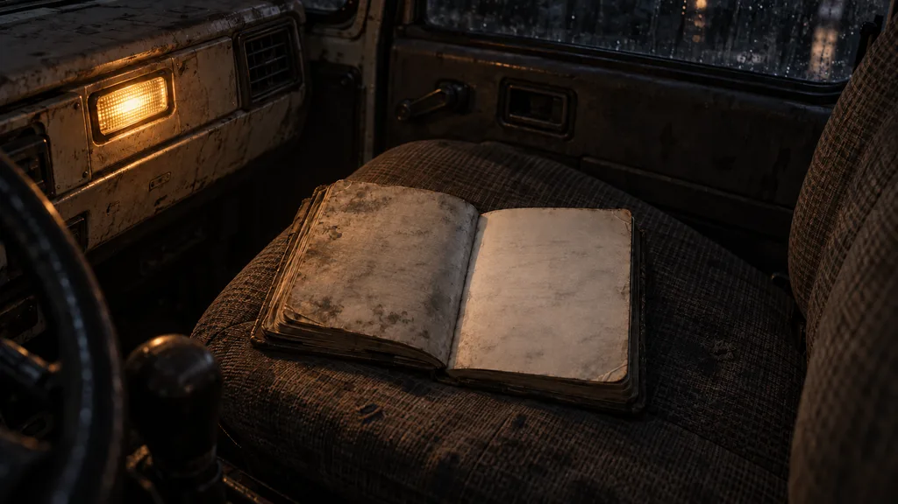
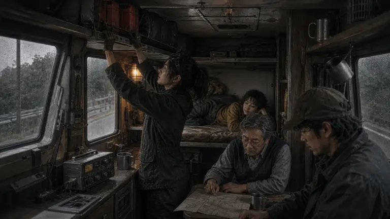
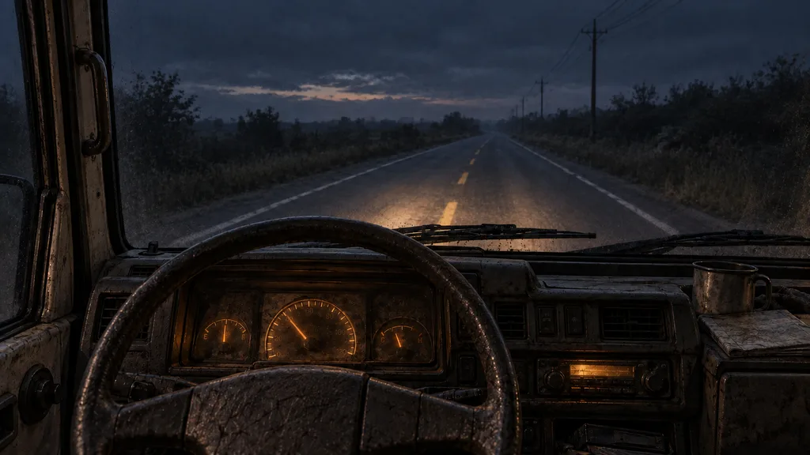
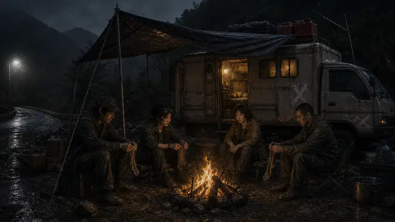
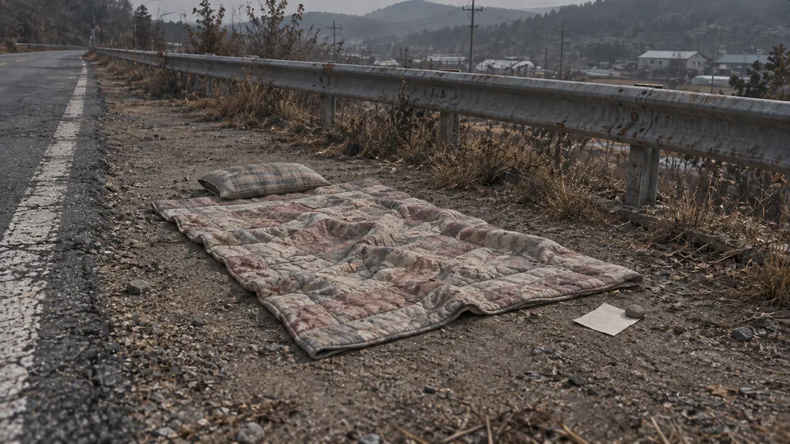
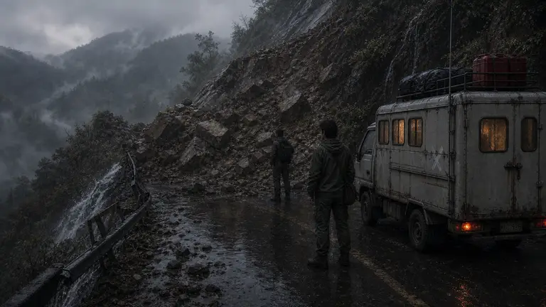

사건 그림 교체안 · v1
그 자리에 있는 것만.
사람 수와 장소를 추측하던 공용 그림 대신, 이 사건의 단서를 보여 줍니다.
초안 · 게임 미적용 · 저장 상태와 무관한 비교 화면
01 / gp_note3
수첩 — 마지막 장
동료가 없어도 나오는 사건. 마지막 장이 펼쳐진 수첩만 가까이 보여 줍니다. 할아버지나 동료는 그리지 않습니다.

이전 그림과 비교

02 / comp_snore
코골이 재판
새벽 운전 중인 사건. 뒤에서 자는 동료들은 화면 밖에 두고, 운전석과 앞길을 담았습니다. 특정 동료 얼굴이나 도시를 고정하지 않습니다.

이전 그림과 비교

03 / ev_road_blanket
도로 위 이불
갓길의 빈 이불, 베개와 작은 쪽지. 주인은 보이지 않고, 아직 먹을 것을 놓아 주지도 않았습니다.

이전 그림과 비교
